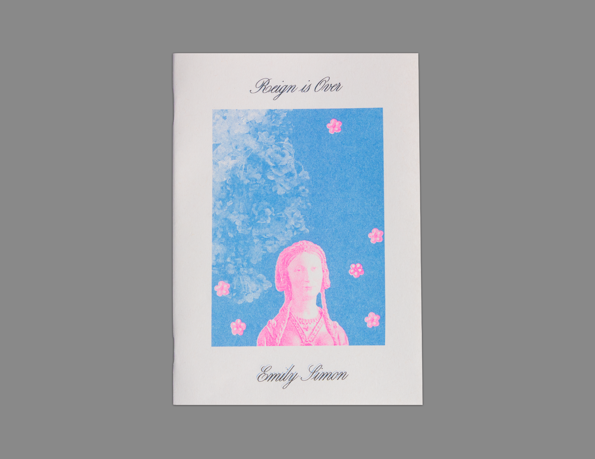
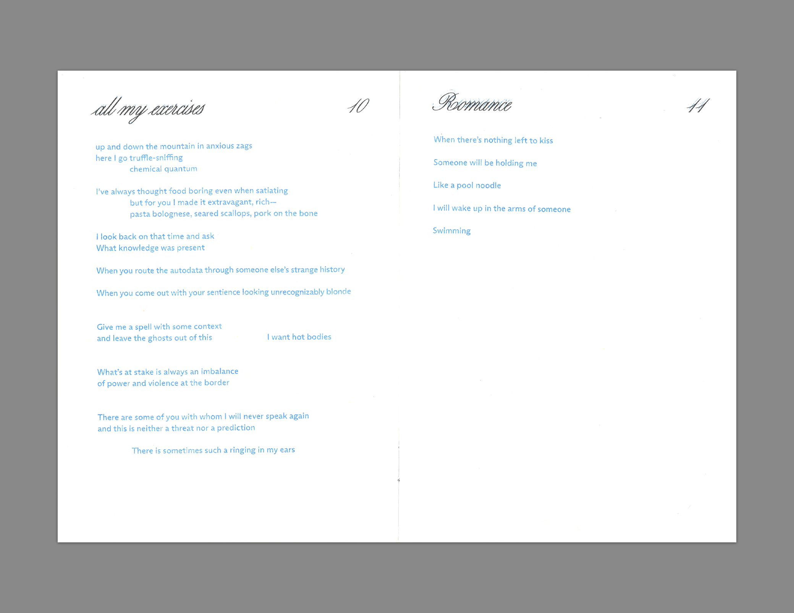

Reign is Over
by Emily Simons
$15
Shop
- 2020
- 5x7in
- 27 pages
- 2-color riso
- Printed on French paper
- Saddle stitched
- Edition of 150, 3rd edition
- ISBN: 9798997222901
A collection of poems about poems themselves and altered states of consciousness.
Passing conversations, daydreams, and transcribed memories collage themselves into this fervent, terrifying, and irreverent portrait of life during the summer of 2020. Over the course of three sections, Simon quickly maneuvers between the mundane and the highly charged, challenging presumptions of how relationships, cities, and lives should "be." Each successive poem interrogates the line between the individual’s voice and that of a collective, before dissolving the difference completely in the book’s final act, leaving only a searing portrait of power, pain, pleasure, and betrayal in its wake.
Emily Simon is a writer living in New York City. Her first book, In Many Ways, was published by Winter Editions in 2023. She is the author of the chapbooks DOCTORS (Copenhagen, 2026) and Reign is Over (Choo Choo Press, 2021). Her work has appeared in Volt, Creative Writing Department, the 1080Press Newsletter, Lit Hub, and elsewhere. A second book is in progress.

